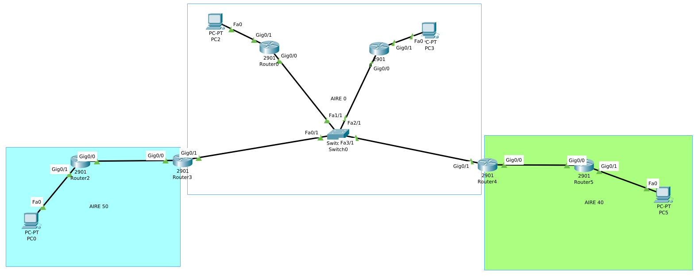

Comprendre le réseau multisite
1. Relier les sites et suivre la table de routage
Un poste compare sa destination à son propre réseau à l’aide du masque. Pour un réseau distant, il transmet vers sa passerelle. Le routeur choisit dans sa table le préfixe le plus précis qui couvre l’adresse. Une route connectée représente un réseau de ses interfaces. Une route statique indique un prochain saut décidé par l’administrateur. Une route dynamique vient d’un protocole comme OSPF ou BGP.
Commence par faire fonctionner chacun des liens et vérifier les passerelles. Construis ensuite le routage. Lors d’un test, repère l’adresse source et vérifie le chemin aller et le chemin retour. Un voisinage établi sur le transit valide une étape, tandis que le ping de PC à PC teste aussi les LAN.
2. Comprendre l’état de liens et le rôle des aires OSPF
Les routeurs échangent des annonces d’état de liens, appelées LSA, pour connaître la topologie. Ils synchronisent leur base LSDB puis calculent des chemins de coût minimal. Le coût demandé sur le lien du TP se règle à 100 sur l’interface concernée. Sur plusieurs liens, le calcul additionne les coûts du chemin retenu.


Une aire regroupe des interfaces et des liens. Dans la deuxième maquette, l’aire 0 sert de dorsale entre les aires 50 et 40. Les routeurs de bordure d’aire y ont une interface. Dans IOS, une route O est intra-aire et O IA indique une autre aire. Le numéro de processus dans IOS est local à chaque routeur. Les deux voisins doivent en revanche être d’accord sur l’aire de leur segment et les paramètres OSPF échangés.
3. Lire le voisinage, l’authentification et l’élection
Un Hello sert à découvrir et garder les voisins. Un DBD résume les informations détenues. Les LSR demandent des données, les LSU transportent des mises à jour et les LSAck les confirment. Pour observer tous ces échanges, capture dès la formation du voisinage. Sur un réseau déjà stable, les Hello seront beaucoup plus visibles que certains autres types.
Sur un réseau Ethernet partagé, OSPF élit un DR et un BDR. Les autres routeurs peuvent rester en 2-Way entre eux et atteindre Full vis-à-vis du DR ou du BDR. L’élection compare la priorité d’interface, puis le Router ID. Une priorité de 0 empêche d’être élu et un nouveau routeur de priorité supérieure ne préempte pas l’élection déjà établie.
Le TP fait activer l’authentification à condensat MD5 sur la maquette IOS. Les voisins doivent être configurés avec le même mode et les paramètres de clé voulus. Une capture montre le type d’authentification et l’identifiant de clé. La protection sert à authentifier les messages et leurs données de routage restent lisibles. Documentation Cisco IOS OSPF
4. Distinguer routage intra-AS, eBGP et redistribution
Un AS est un système autonome qui applique une politique de routage. Dans le TD3, les routeurs de deux AS différents établissent des sessions eBGP sur les liaisons frontières. BGP échange des préfixes et des attributs comme AS_PATH et NEXT_HOP. Une route présente dans la table BGP mérite encore d’être vérifiée dans la table de routage effective.

La redistribution rend certaines routes d’un protocole disponibles dans un autre. Par exemple, le routeur de bordure du TP peut injecter dans OSPF les routes statiques d’une zone. Avec la métrique externe de type 2 du cas du TD, une route réinjectée peut apparaître sous O E2. Contrôle précisément les préfixes redistribués et évite la réinjection d’une route vers son protocole d’origine. Pour la maquette, suis un réseau de bout en bout dans chaque table.
Du cours aux TD et TP
Le sujet du TP1 est disponible. Les démarches du TD3 sont reconstituées à partir du compte rendu et de la topologie Packet Tracer disponibles.
| Notion | Où la travailler | À savoir refaire |
|---|---|---|
| Interfaces, passerelles et voisinage | TP1, 1–2 | Adressage, voisin, LSDB, route distante et tests aller-retour. |
| Authentification, aires et élection | TP1, 3–5 | Capturer les échanges et expliquer les rôles DR/BDR et le marquage interaire. |
| Redistribution de statiques | TP1, 6 | Vérifier l’origine et l’installation de la route externe avant le ping. |
| Frontières eBGP et AS de transit | TD3, deux topologies | Configurer les voisins, suivre le préfixe, relier la capture aux routes des quatre routeurs. |
Questions TD & TP
TP1, 1–2 · Adresser la maquette et monter un voisinage OSPF
Énoncé. Configurer les deux routeurs selon le plan du groupe, régler le coût des liens à 100, observer les paquets, les tables et la base de données, puis vérifier l’échange entre les deux PC.
- Exemple de l’aire 50 : utilise
192.168.50.0/24,10.0.50.0/24et192.168.51.0/24. Place10.0.50.1et10.0.50.2sur le transit, des adresses différentes sur les deux LAN et les passerelles correspondantes sur les PC. Vérifieshow ip interface briefet le ping du transit. - Active OSPF sur les interfaces de transit et de LAN dans l’aire de ton groupe, avec
ip ospf 1 area 50pour cet exemple. Règleip ospf cost 100selon le sujet. Garde les interfaces LAN passives si elles annoncent le réseau sans voisin routeur. - Contrôle
show ip ospf neighbor,show ip ospf databaseetshow ip route ospf. Depuis le routeur de gauche, la route vers le LAN droit doit pointer vers le routeur de droite. Vérifie le retour et fais le ping de PC à PC.
TP1, 3 · Activer et observer l’authentification
Énoncé. Expliquer l’authentification OSPF, activer MD5 sur les deux routeurs du TP et mettre en évidence son utilisation dans la capture.
- Sur l’interface de transit, configure
ip ospf authentication message-digestetip ospf message-digest-key 1 md5 <clé-du-labo>sur les deux côtés. Le numéro est un identifiant de clé et la valeur fournie au banc reste dans la maquette. - Contrôle le voisinage puis capture un paquet OSPF. Déplie l’en-tête et relève le type cryptographique et l’identifiant de clé. Si les Hello arrivent mais que les routeurs restent sans voisinage, vérifie aire, temporisations, type de réseau et authentification.
TP1, 4–5 · Construire le backbone et lire l’élection
Énoncé. Relier les groupes par un switch sur l’aire 0, comparer les captures et tables de routage, puis identifier et expliquer l’élection du DR et du BDR.
- Utilise le schéma du TP pour ranger chaque interface dans l’aire de son segment. Sur le backbone, utilise le plan d’adressage commun prévu pour éviter de reprendre la même IP que l’autre groupe.
- Capture les échanges lorsque les nouveaux liens se mettent en place. Classe les paquets par rôle. Dans les tables, repère un préfixe d’une autre aire avec
O IAet identifie son prochain saut. - Sur le réseau partagé, lis la priorité et les rôles dans
show ip ospf interfaceetshow ip ospf neighbor. Un prochain renouvellement de l’élection dépend de la priorité puis du Router ID. Ne déduis pas le rôle à partir de la seule valeur théorique quand l’élection a déjà eu lieu.
TP1, 6 · Redistribuer les statiques de la zone verte
Énoncé. Passer la zone verte en routage statique et faire annoncer ses routes par Router4 dans l’aire 0. Comparer les tables de Router3 et Router4.
- Fais installer à Router4 la route statique vers le LAN de la zone. Vérifie aussi la route de retour de l’autre routeur de la zone.
- Dans le processus OSPF de Router4,
redistribute static subnetspermet d’injecter les routes statiques de la maquette. Contrôle les préfixes à faire passer et limite la redistribution à ceux du TP si d’autres statiques sont présentes. - Sur Router4, compare la route statique locale et la LSDB. Sur Router3, cherche la route externe distante et son prochain saut. Teste séparément l’aller et le retour plutôt que de déduire la connectivité de l’annonce seule.
TD3 · Établir BGP entre AS100 et AS200
Consigne reconstituée d’après le compte rendu. Relier les deux LAN avec une session eBGP entre les routeurs du transit en 10.0.0.0/30, puis vérifier préfixes, échanges et connectivité.
- Configure R0 en
10.0.0.1/30et R1 en10.0.0.2/30sur le transit. Leurs LAN sont respectivement192.168.10.0/24et192.168.20.0/24. Vérifie le lien et les passerelles avant BGP. - Dans
router bgp 100sur R0, indiqueneighbor 10.0.0.2 remote-as 200et annoncenetwork 192.168.10.0 mask 255.255.255.0si la route exacte existe. R1 configure l’opération symétrique pour son LAN et son voisin. - Lis
show ip bgp summarypuis la table de routage. En mode Simulation, isole TCP 179 et les messages BGP OPEN, KEEPALIVE et UPDATE. Le compte rendu donne la démarche et ne conserve pas un relevé de chaque paquet.
TD3 · Faire transiter un préfixe par l’AS200
Consigne reconstituée d’après le compte rendu. Relier AS100 et AS300 à travers R2 et R4 dans AS200, avec OSPF au centre. Comparer les voisins, les échanges et les routes sur l’ensemble du trajet.
- Monte les deux relations eBGP aux bords et le voisinage OSPF entre R2 et R4. Vérifie d’abord chaque relation indépendamment. Le sujet décrit une maquette Packet Tracer, avec OSPF pour la partie interne.
- Pour un LAN extérieur, suis la route eBGP reçue à un bord, son transport sous forme de route externe OSPF vers l’autre bord, puis son annonce eBGP. Le compte rendu montre la reprise des routes externes dans BGP. Pour limiter les boucles, sélectionne les préfixes autorisés à chaque export et vérifie le chemin inverse.
- Sur R2, compare la route du LAN proche apprise en BGP et la route du LAN à l’autre bout du transit apprise sous
O E2dans la maquette. Relie chaque entrée au prochain saut qui l’a fournie. Complète avec un aller-retour de PC à PC.